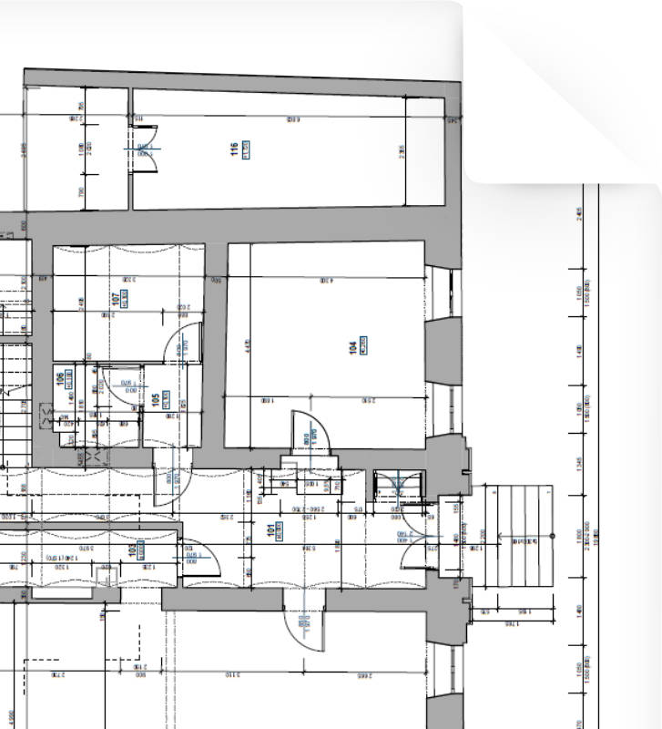
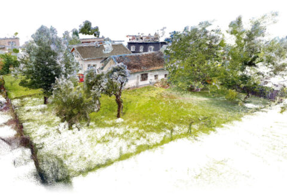
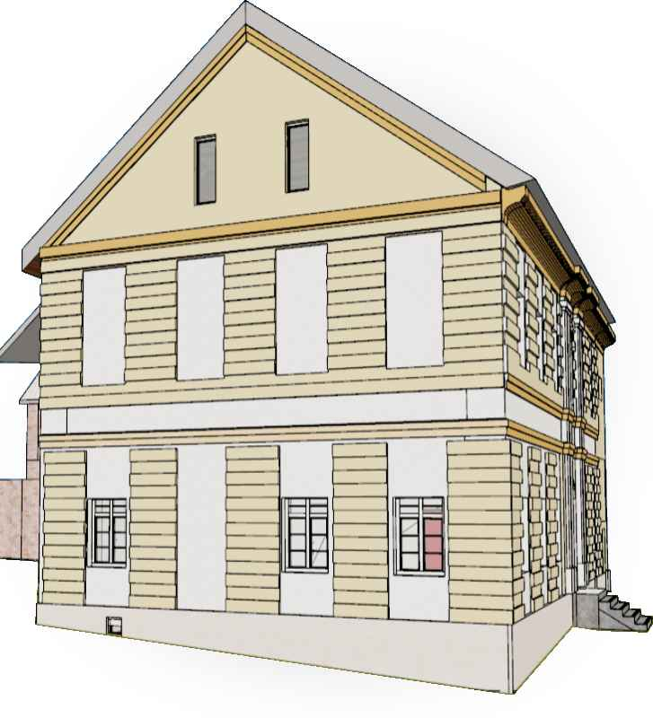

Máte AKTUÁLNÍAKTUÁLNÍ dokumentaci své budovy?


Realita se od starých
výkresů liší.
§
Řešení: pasport stavby
dle vyhlášky 131/2024 Sb.

MRAČNO BODŮ

3D MODEL

2D VÝKRESY

KALKULACE ZDARMA
panopro.cz